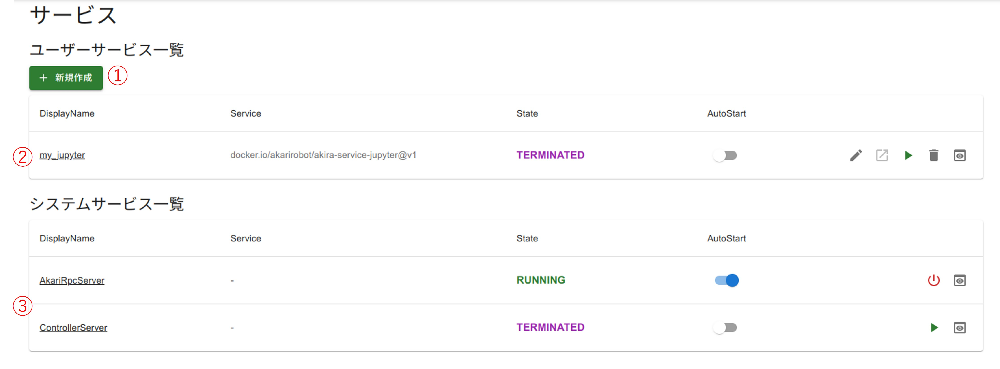
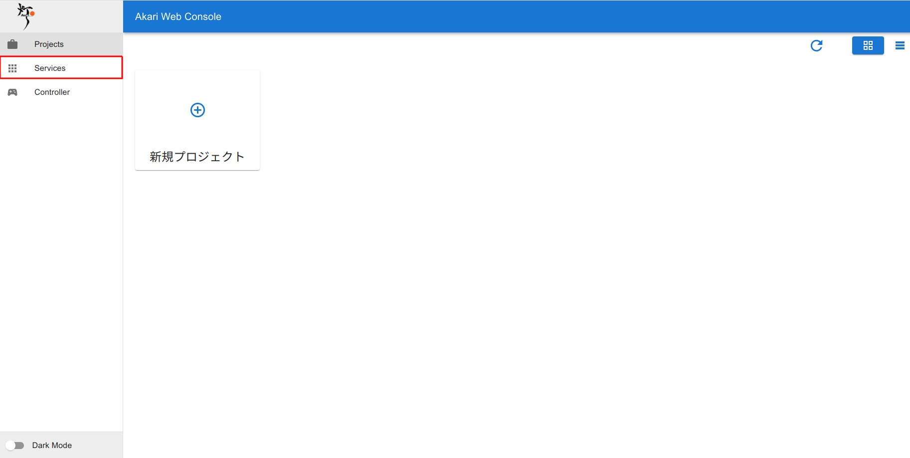
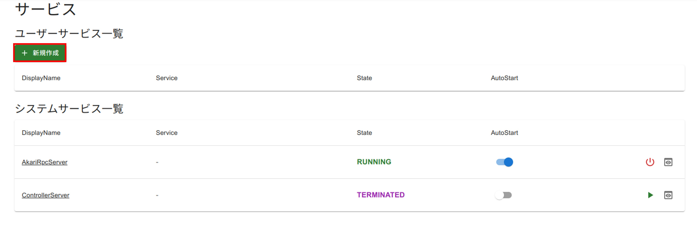
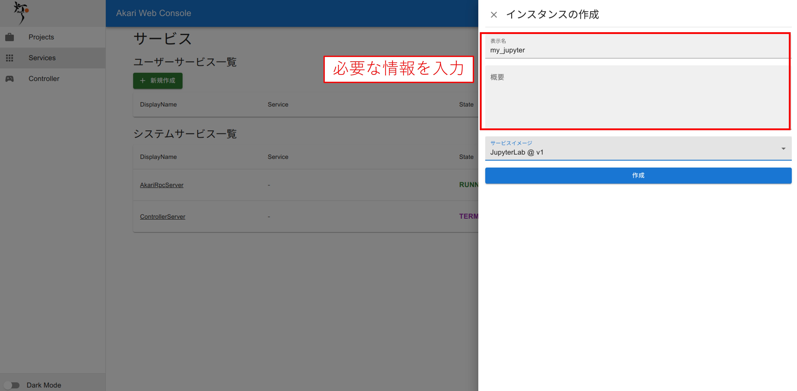
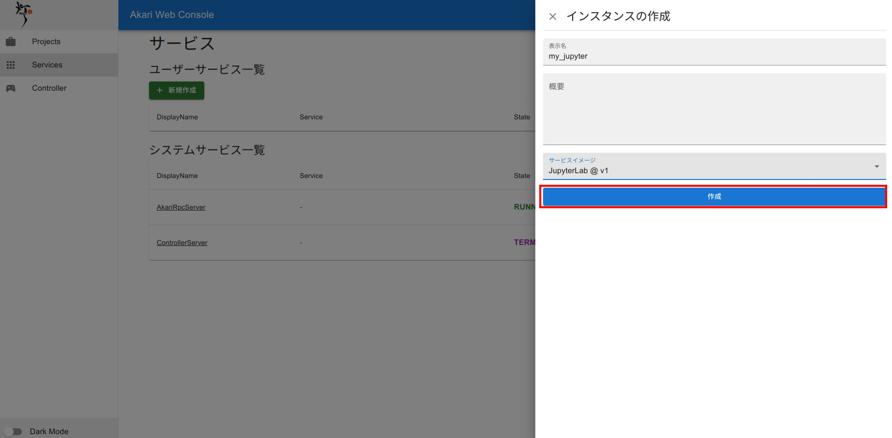

サービスを使ってみよう
ここからは、webコンソールからプログラムを書いて、AKARIを動かす方法を学習していきます。
そのための第一歩として、まずはサービスの作り方、実行方法を学習していきます。
Servicesページの説明
webコントローラを使ってみよう のページでも、controllerで必要なサービスの立ち上げ手順を学習しましたが、今回はサービスについてより詳しく学んでいきます。
まずはServicesページについて説明していきます。
サービスの種類
AKARI webコンソールのサービスは、バックグラウンドで起動するAKARIの動作、実行環境を意味します。
サービスには、 ユーザーサービス と システムサービス があります。
ユーザーサービス はユーザーが自由に追加、編集して使うことのできるサービスです。
システムサービス はよりシステム領域に近いサービスで、追加や編集はできません。
サービスページの見方
{kind=link}
サービスページの見方を説明します。
新規作成ボタン
ここでAKARIのサービスを新たに作成できます。
ユーザーサービス一覧
ユーザーサービスの一覧が表示されます。各サービスには下記の項目があります。・DisplayNameサービス名です。・Serviceサービスのベースとなるイメージです。・Statusサービスの状態です。・AutoStartサービスの自動起動の設定です。これをONにしておくと、次回からAKARIが立ち上がった時点でこのサービスも自動で起動します。・編集ボタンサービスの編集ができます。・開くボタンサービスが開きます。・実行・停止ボタンサービスの実行、停止ができます。・削除ボタンサービスを削除できます。・詳細ボタンサービスの状態やエラーメッセージを確認できます。
システムサービス一覧
システムサービスの一覧が表示されます。項目はユーザーサービス一覧と同じですが、編集、開く、削除ボタンはありません。
AkariRpcServerを立ち上げよう
webコントローラを使ってみよう でも説明しましたが、AkariRpcServerはAKARIのpython APIを実行するために起動しておく必要があります。AkariRpcServerが立ち上がっていなかったら、実行ボタンをクリックして起動しておきましょう。STATUSがRUNNINGに変わればOKです。初回実行時やアップデート配信時は、起動に時間がかかりますのでしばらくお待ちください
重要
AkariRpcServerはAPI実行のため毎回立ち上げる必要があるので、AutoStartのスイッチをONにしておくことを推奨します。
これを実行しておくと、以降AKARIの電源投入時に自動でAkariRpcServerが立ち上がるようになります。
{kind=link}
サービスを作ってみよう
ここからは、webコンソールからAKARIのプログラムを書いて動かすために必要なユーザーサービスの使い方を説明します。
webコンソールを使ってみよう の手順でwebコンソールへアクセスしたら、コントローラを使うために必要なサービスを作っていきます。
Servicesページを開く。
左のページリストから、Servicesを選択し、開きます。
{kind=link}
新規作成ボタンを押す。
新規作成ボタンを押し、新しいユーザーサービスを作成します。
{kind=link}
必要な項目を編集する。
新たにサービス作成用のページがポップアップするので、必要な情報を編集してきます。表示名: 好きな名前を入れます。概要: 任意で概要を記載します。空欄でも問題ありません。サービスイメージ: クリックすると、選択できるサービスイメージの一覧が開きます。まずは JupyterLab を選択してみましょう。
{kind=link}
作成ボタンを押す。
サービスの一覧に戻り、作成したサービスがユーザーサービス一覧に追加されます。
{kind=link}
サービスを起動しよう
次に先程作ったサービスを起動します。
サービスの起動には、再生マークの実行ボタンをクリックします。
すると、しばらく待った後にサービスのStatusがSTARTING→RUNNNINGへと変化します。
RUNNINGになったらサービスの立ち上げは完了です。
重要
初回実行時やアップデート配信時は、起動に時間がかかります。
ネットワーク速度によって、10分以上かかる場合もあります。
しばらくお待ちください。
{kind=link}
これで必要なサービスを立ち上げることができました。
次はwebコンソールからプロジェクトを作成してみましょう。
プロジェクトを使ってみよう へ進む
webコンソールを使ってみよう へ戻る